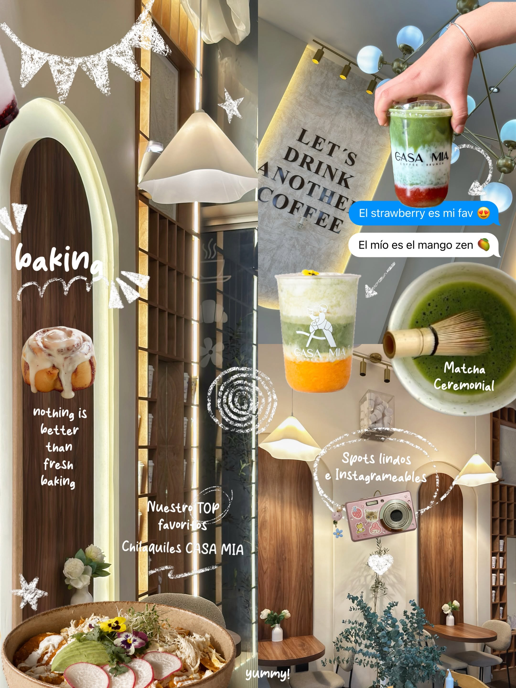
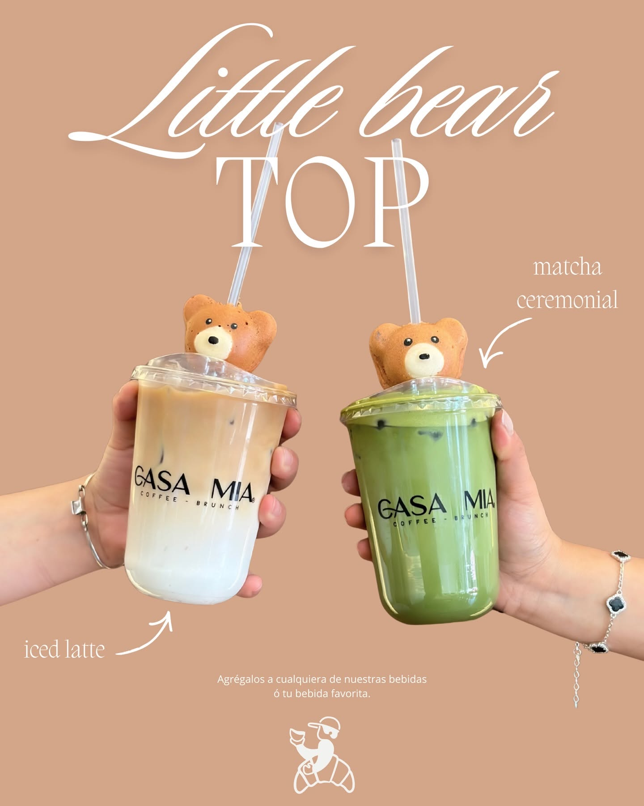

El lujo tambiénse sirve en una mesa de café
Bebidas signature, matcha ceremonial y brunch artesanal en un espacio pensado para quedarse. Sin prisas, sin drama — solo café.


"Hay lugares a los que vienes… y otros que se quedan contigo."
Un rincón de café
pensado como en casa
CASA MIA nació en La Paz, Puebla, con una idea simple: que cada bebida se sirviera con el mismo cuidado con el que se recibe a alguien querido en casa. De ahí el nombre — y de ahí también cada detalle del espacio, pensado para quedarse a leer, trabajar o simplemente respirar.
Hoy somos el spot favorito de quienes buscan algo distinto: bebidas signatur con identidad propia, un menú de brunch que se repite por gusto y un lugar tan bonito como lo que se sirve en él.
Café de especialidad
Grano seleccionado, extracción cuidada, arte en cada taza.
Brunch artesanal
Recetas propias, ingredientes frescos, presentación con flores comestibles.


Más que una bebida,
una pausa con estilo

Spots instagrameables
Arcos, luz cálida y rincones pensados para tu próxima foto favorita — cada esquina del espacio se diseñó para quedarse en cámara tanto como en la memoria.

Matcha ceremonial
Batidor de bambú, grado ceremonial y una textura cremosa que equilibra intensidad y suavidad en cada taza.

Little Bear topper
Agrégalo a cualquier bebida — el detalle más tierno del menú, y el que más se repite en fotos.

Panadería artesanal
Horneado fresco cada mañana: conchas, croissants y lo que vaya saliendo del horno ese día.

"No es solo café, es experiencia" — así nos describen quienes ya nos visitaron.La Paz, Heroica Puebla de Zaragoza
+1,500 personas ya lo aman, y seguimos creciendo.
Te esperamos hoy mismo
Dirección
Av. Teziutlán Nte. 2, Plaza Comercial Teziutlán 2, Planta Baja Local 4, La Paz, 72160 Heroica Puebla de Zaragoza, Pue.
Horario
Lunes a domingo — consulta el horario del día en nuestro Instagram
Redes

No drama, just coffee
Reserva tu mesa, pide para llevar o simplemente ven a descubrir tu nueva bebida favorita.